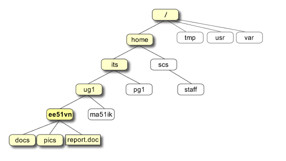

UNIX and Linux#
The time has come,’ the Walrus said, To talk of many things: Of shoes — and ships — and sealing-wax — Of cabbages — and kings — And why the sea is boiling hot — And whether pigs have wings.’
—Lewis Carroll
Learning goals
By the end of this chapter you should be able to:
Navigate the UNIX filesystem using commands like
cd,ls,pwdUnderstand the hierarchical directory structure
Manage files and directories (create, copy, move, delete)
Use text editors to create and modify files
Understand and use file permissions
Use shell features like tab completion, wildcards, and command history
Search for files and patterns using
findandgrepRedirect input/output and use pipes to combine commands
Prerequisites
Before starting this chapter, you should:
Have access to a UNIX/Linux system or terminal
Be comfortable using a keyboard for commands (rather than GUI interfaces)
Have basic computer literacy skills
Introduction#
Here we are going to learn to work in a UNIX-like environment, with examples from Linux and macOS. Where administration differs, our Linux examples focus on Ubuntu, a Debian-based distribution. UNIX-style tools are widely used in scientific computing: they let us organise data, combine small programs and automate repetitive tasks. They are not the only way to do serious computing or genomics! Windows users can follow the shell examples in an appropriate Linux environment such as WSL; PowerShell is a different shell with different syntax.
What is UNIX?#
UNIX began at Bell Labs in 1969, led by Ken Thompson and Dennis Ritchie. Its later implementation largely in C helped make it portable across different machines. Its multi-user design, hierarchical filesystem and tools that can exchange plain text make it a useful environment for developing code and handling data. UNIX-like systems can also store and process binary and proprietary file formats; plain text is a useful convention, not a restriction.
Linux is an independently developed UNIX-like kernel, not a direct descendant of the original UNIX source. A Linux distribution such as Ubuntu combines that kernel with command-line tools, libraries and applications. macOS has UNIX foundations through Darwin and BSD, but macOS as a whole is not open-source.
Why UNIX?#
Small tools can be combined to explore and transform data.
Shell scripts make repetitive tasks easier to automate and reproduce.
Multi-user and multitasking systems support shared machines and concurrent work.
Network tools help us work on remote computers; Linux is especially common on scientific computing clusters.
Linux and many command-line tools are free and open-source. That does not describe every UNIX system or every application installed on one.
There is a large body of documentation, tutorials and community support.
These skills transfer between local work, servers and high-performance computing systems.
Warning
UNIX-like systems are not immune to malware or intrusion. Security depends on updates, permissions, configuration and what you choose to run. An open-source licence permits inspection and reuse; it does not by itself guarantee safety.
Note
32-bit vs 64-bit: A 32-bit address space can address \(2^{32}\) bytes (4 GiB). A 64-bit address space is much larger, but real memory limits depend on the processor, operating system and hardware. When installing software, match both the operating system and CPU architecture, for example x86-64 or ARM64; “64-bit” alone does not identify a compatible package.
UNIX directory structure#
Some key directories on a typical Linux system are:
Directory |
Description |
|---|---|
|
The root of the filesystem tree. |
|
Basic programs; on many Linux systems this is a link to |
|
System configuration files. |
|
Device files. |
|
Usually contains users’ home directories on Linux, such as |
|
Temporary files; do not keep important work here. |
Your own home directory is not /home itself. It is often /Users/yourname on macOS, and may be elsewhere on a managed system. Use echo "$HOME" to see its path, or cd to go there. The shorthand ~ refers to your home directory when expanded by the shell.
This hierarchical structure lets you describe locations with paths, both at the command line and in programs.


Fig. 3 UNIX directory structure. The UNIX directory (same as “Folder”) structure is hierarchical, with a single tree starting from the “root” /. This is quite unlike Windows or MS-DOS, where there are separate trees for disk partitions, removable media, network, etc.
(Source: https://pathanruet.files.wordpress.com/2012/05/unix-tree.png)#

Meet the UNIX shell#
A terminal emulator is the application window in which you type commands and see output. The shell is the program that interprets those commands, runs other programs and connects them together. The operating system’s kernel manages resources such as processes, memory, files and access to hardware. These are different layers, not different names for the same thing.
We will use Bash, the Bourne Again Shell, named after the earlier Bourne shell (sh).
On Ubuntu’s usual desktop, Ctrl + Alt + T opens a terminal. On macOS, use Cmd + Space, search for Terminal and press Return. Other desktops may use different shortcuts.
Note
Recent macOS installations normally start an interactive zsh shell. To follow this chapter’s Bash examples consistently, type bash in your terminal. This starts a Bash session without changing your login-shell configuration; type exit when finished. echo "$BASH_VERSION" reports the version in Bash. $SHELL usually describes your configured login shell, not necessarily the shell currently interpreting your commands.
Tip
Need a working terminal? See Choose an environment for Linux, macOS, Windows/WSL, ChromeOS and managed-machine routes, then Open a terminal and identify the shell. Installing Ubuntu or changing your disk partitions is not required for these lessons.
Let’s look at the command prompt:
A new terminal often starts in your home directory, but an editor’s terminal may start in a project directory. Use
pwdto check.A prompt such as
yourname@computer:~$shows the user, computer and current directory. Its appearance is configurable, so yours may differ.The prompt is not part of a command: type only the command that follows it.
Tip
cd and cd ~ take you home. cd ~/Documents and cd "$HOME/Documents" refer to the Documents directory in your home, if that directory exists. Do not type a literal /home/yourname path unless that is actually your account’s path.
Useful shortcuts in Bash’s usual Emacs-style line-editing mode include:
Shortcut |
Action |
|---|---|
|
Go to the beginning of the line. |
|
Go to the end of the line. |
|
Clear/redraw the screen. |
|
Remove text before the cursor. |
|
Remove text after the cursor. |
|
Request interruption of the foreground command, or cancel the input line. |
|
Signal end of input; at an empty prompt this normally exits the shell. |
|
Move forward/backward a word, if the terminal sends these key combinations. |
Use Tab to complete command names and paths; when completion is ambiguous, pressing it again often lists alternatives. Try typing ls /et and pressing Tab before Return. Up/down arrows recall earlier commands. Bindings can differ with terminal settings and line-editing mode.
Enabling auto-complete in terminal
Ordinary Tab completion needs no administrator setup. It differs from optional application-specific completion, arrow-key history recall and Ctrl + R history search. The FoNS “auto-complete” example is actually history-prefix search. See Completion and command history for the distinctions and optional user-local Bash or zsh configuration, including how to test and undo it.
Special Characters#
The shell interprets some characters before it runs a command. Their meaning depends on context and quoting; we will practise these gradually.
Character |
Meaning |
|---|---|
|
Home-directory shorthand at the start of an unquoted path. |
|
Separates path components. |
|
Starts a comment when unquoted at the beginning of a shell word. |
|
Introduces expansions, such as |
|
Used in several constructs, including brace expansion and command groups. |
|
Filename wildcard matching zero or more characters. |
|
Filename wildcard matching one character. |
|
Escapes the next character outside single quotes; a backslash-newline continues a command. |
|
Separates commands, running the next even if the previous one failed. |
|
Runs the next command only if the previous one succeeded. |
|
Pipes standard output from one command to standard input of the next. |
|
Redirects standard output, creating or truncating the target file. |
|
Negates a pipeline’s exit status; interactive Bash also uses it for history expansion. |
Quote paths containing spaces, for example ls "field notes.txt". Single quotes preserve literal text; double quotes preserve spaces while still allowing expansions such as $HOME. Filename wildcard rules and regular-expression rules are different.
Basic UNIX commands#
Here are some basic commands, many of which you will use frequently. Uppercase names below are placeholders for your own paths or values.
Command |
What it does |
|---|---|
|
Show a command’s manual page. |
|
Display your user name. |
|
Show the current directory. |
|
List directory entries; hidden names are omitted by default. |
|
Change directory. |
|
Move one directory up. |
|
Go to the root directory. |
|
Go to your home directory. |
|
Copy a file. Copying a directory requires a recursive option. |
|
Copy a directory and its contents recursively. |
|
Move or rename a file or directory. |
|
Update timestamps; create an empty file if it does not exist. |
|
Print a simple string. |
|
Remove a file, not an ordinary directory. |
|
Remove an empty directory. |
|
Remove a directory and its contents recursively. |
|
Count newline characters, words and bytes. |
|
Sort lines and print the result. |
|
Collapse adjacent repeated lines; separated duplicates remain. |
|
Print a file’s contents. |
|
Browse a file; press |
|
Print the first ten lines by default. |
|
Print the last ten lines by default. |
|
Show the shell’s recorded command history. |
|
Print the current date and time. |
|
Identify a file’s type from its contents and other information. |
|
Change your password, subject to the system’s account policy. |
|
Change permissions; for example, |
Warning
rm does not normally move files to a desktop Trash folder. We will practise deletion only on files created for the exercise. Check pwd and the target before running a destructive command.
Tip
$(), $(( )), and ${} are all Bash expansions, used for different purposes!
${} is a parameter expansion, used when referencing a variable to make it clear where the variable name ends.
$() is a command substitution, which runs a command and inserts its output.
$(( )) is an arithmetic expansion, used to evaluate mathematical expressions.
run the code below to test these commands out!
name="Alice"
echo "Hello ${name}!"
echo "Hello on $(date +%F)"
echo "1 + 2 * 3 = $((1 + 2 * 3))"
Hello Alice!
Hello on 2025-10-21
1 + 2 * 3 = 7
Exploring files and directories#
A fundamental command is ls, which lists directory entries. Check where you are with pwd, then try ls and ls /. The latter lists entries in the root directory shown in the filesystem figure.
By default ls omits hidden names, which start with a dot. Compare:
ls -a
ls -l
ls -al
-a includes hidden entries; -l uses the long format. You can combine these flags. An example long-format entry is:
drwxr-xr-x 9 mhasoba mhasoba 4096 Oct 11 10:45 Desktop
From left to right:
The first character is the type:
dfor directory,-for regular file, orlfor symbolic link (a reference to another path).The next three triplets are permissions for the owner, the file’s group and everyone else.
rwxmeans read, write and execute/search permission; a dash means that permission is absent.9is the hard-link count, not a count of all items inside the directory. Regular files can have more than one hard link. Directory link counts depend on filesystem conventions.The next fields name the owner and the group associated with this entry. Matching names do not make that user
root; groups allow permissions to be shared among users.4096is the entry’s size in bytes. For a directory this is not the total size of the files below it.The remaining fields show the modification time and name.
For a regular file, read permits reading its contents, write permits changing them, and execute permits attempting to run it as a program. For a directory, read permits listing names, execute (search) permits traversing it and accessing named entries, and write together with search normally permits creating, renaming or deleting entries. Changing a file’s contents still depends on that file’s permissions. Thus r-x on Desktop does not guarantee that every file inside it is read-only. Additional controls, such as ACLs and the sticky bit, may also apply.
We will try a small permissions experiment on a disposable file below.
Note
Changing permissions on your own practice files is different from administering the system. Do not add sudo automatically when a command fails; first check the path, ownership and intended operation. See Administrator privileges for that boundary.
Building your coursework directory structure#
For CMEE coursework, use a single CMEECourseWork directory in a suitable location in your home directory, such as Documents. Within it use week1, week2, etc., each containing code, data, results and sandbox. Keep names lowercase exactly as shown. sandbox is for scratch work, not assessed files you need to retain. You will bring coursework under version control in the Version Control chapter.
Warning
First rehearse the following file operations in a fresh temporary directory. The next cell creates one and enters it; everything through the search exercises should be done in this practice tree, not in existing coursework. Keep this terminal session open so its variables remain available. Do not copy real coursework into it or delete an existing coursework sandbox to repeat the lesson.
After practising, create the same structure in your chosen permanent coursework location, or use your existing structure. Temporary directories are not suitable for storing submissions.
practice_root=$(mktemp -d)
cd "$practice_root"
pwd
Check what you have in there with:
ls
The fresh practice directory should be empty.
Now make the directory and cd to it
mkdir CMEECourseWork
You will get an error if a directory by that name already exists.
cd CMEECourseWork
You are now inside the practice CMEECourseWork. Commands joined with && run the right-hand command only if the left-hand command succeeds; ; runs the next command regardless of that status.
Predict the output of these two lines before trying them. missing-directory does not exist in this fresh tree:
cd missing-directory && echo "Reached the next command"
cd missing-directory; echo "Reached the next command"
pwd
Both cd attempts should fail and leave the working directory unchanged. Which echo runs? Why would cd TARGET && COMMAND matter before a command that writes files?
Next, create your week1 subdirectory:
mkdir week1
cd week1
mkdir sandbox code data results
From CMEECourseWork/week1, predict what happens when the spelling differs:
(cd Sandbox)
pwd
The parentheses run cd in a subshell, so your main shell stays in week1 even if it succeeds. On a case-sensitive filesystem, Sandbox and sandbox are different names, so this produces a ‘No such file or directory’ error. On a case-insensitive filesystem it may succeed. What did you observe?
Warning
Case sensitivity depends on the filesystem, not simply the OS. Many macOS volumes are case-insensitive while preserving the spelling of names; Linux filesystems are usually case-sensitive. This does not make all macOS commands or shell variables case-insensitive. Match case exactly in commands and paths so your work transfers between systems.
Stay in the temporary tree’s CMEECourseWork/week1. Predict what each command will do, then run it and explain any error:
pwd
mkdir sandbox
rm sandbox
rmdir sandbox
mkdir sandbox
touch sandbox/disposable.txt
rmdir sandbox
The first mkdir fails because sandbox already exists. Plain rm refuses an ordinary directory. rmdir removes the empty directory, but its second attempt fails because the recreated directory contains a file. These are expected failures, not reasons to add sudo or -f.
Inspect ls sandbox before the next command. It should contain only the disposable file created above. Now try removing this nonempty practice directory recursively:
rm -r sandbox
Careful with the -r option, because starting with the target directory (sandbox in this case), it recursively removes the entire directory tree inside the target directory, files and all!
Now recreate your sandbox:
mkdir sandbox
Let’s try renaming it. On some case-insensitive filesystems, changing only the spelling’s case with mv may report that the source and destination are the same. If that happens, rename via a distinct unused name: mv sandbox rename-demo && mv rename-demo Sandbox. Apply the same two-step approach when changing it back below.
mv sandbox Sandbox
ls
code data results Sandbox
Let’s move back to all small caps sandbox for naming consistency:
mv Sandbox sandbox
ls
code data results sandbox
Next try some more directory and file manipulations:
cd sandbox
Try pwd (print working directory) next to see the full path of the current directory.
Let’s continue:
ls # nothing here yet
The # above starts a comment because it is unquoted and begins a shell word. The shell ignores the rest of that line. A quoted '#', or a hash inside a word such as sample#1, is literal text instead.
touch TestFile # Or, "touch TestFile.txt"
ls
TestFile
mv TestFile TestFile2; ls # commands can also be sequentially executed with a `;`
TestFile2
rm TestFile2
Editing a file and changing permissions#
You should still be in the practice CMEECourseWork/week1/sandbox. Create notes.txt with a plain-text editor (for example nano notes.txt, if installed), enter a sentence and save it. In nano, Ctrl + O then Return saves, and Ctrl + X exits. You can instead use your graphical editor to open this exact directory and save the same filename.
pwd
cat notes.txt
ls -l notes.txt
chmod u-w notes.txt
ls -l notes.txt
chmod u+w notes.txt
ls -l notes.txt
Predict which permission character changes. u selects the owner; -w removes write permission and +w restores it. This does not prevent deletion by someone with the appropriate directory permissions. Edit and save a second sentence after restoring write permission.
Returning to the project root#
From CMEECourseWork/week1/sandbox, cd ../.. takes you to CMEECourseWork. A second option uses the absolute path saved when we created the temporary directory:
cd "$practice_root/CMEECourseWork"
pwd
mkdir -p week1/{data,code,results,sandbox}
Bash expands the braces into four paths. mkdir -p creates missing parents and accepts directories that already exist. Compare that with the earlier plain mkdir error. Use exactly the same lowercase spelling throughout. Remain at this practice project root for the next section.
Command arguments#
Most commands accept arguments. Options such as -l modify behaviour; operands such as paths specify what to act on. Options are command-specific: the same letter can mean different things to different commands.
Command |
What it does |
|---|---|
|
Copy recursively, including files and subdirectories. |
|
Ask before removing a file. |
|
Remove a directory and its contents recursively. |
|
Include hidden entries. |
|
Long format with human-readable sizes, such as K, M and G. |
|
Long format. |
|
Order by size, largest first. |
|
Order by modification time, newest first. |
|
One entry per line (the option is the digit one). |
|
Reverse the sorting order. |
|
List subdirectories recursively. |
|
Create missing directories along this path. |
|
Sort using numeric values: 2 precedes 11. |
You should be at the practice CMEECourseWork root. You can combine options; compare the following commands:
pwd
ls -r
.:
week1
./week1:
code data results sandbox
./week1/code:
./week1/data:
./week1/results:
./week1/sandbox:
-r reverses the listing order; it does not descend into subdirectories. Compare with ls -R, whose uppercase R means recursive. Options are case-sensitive.
ls -lr # same as ls -l -r
.:
total 4
drwxrwxr-x 6 mhasoba mhasoba 4096 Oct 5 12:00 week1
./week1:
total 16
drwxrwxr-x 2 mhasoba mhasoba 4096 Oct 5 12:00 code
drwxrwxr-x 2 mhasoba mhasoba 4096 Oct 5 12:00 data
drwxrwxr-x 2 mhasoba mhasoba 4096 Oct 5 12:00 results
drwxrwxr-x 2 mhasoba mhasoba 4096 Oct 5 12:00 sandbox
./week1/code:
total 0
./week1/data:
total 0
./week1/results:
total 0
./week1/sandbox:
total 0
This combines long format (-l) with reverse order (-r). It shows permissions and modification times, but does not list directory contents recursively. What would ls -lR change?
redirection and pipes#
Output of programs can also be “redirected” to a file in two ways:
>: redirect output from a command to a file on disk. If the file already exists, it will be overwritten.>>: Append the output from a command to a file on disk. If the file does not exist, it will be created.
Let’s try some examples.
First make sure you are back in sandbox:
cd week1/sandbox
echo "My first line." > test.txt
cat test.txt
My first line.
echo "My second line" >> test.txt
cat test.txt
My first line.
My second line
Now try
ls / >> ListrootDir.txt
cat ListrootDir.txt
What do you see? Cool!
A pipe, |, connects the standard output of one command to the standard input of another. For example, ls / | wc -l counts newline characters in the listing, usually one per visible entry here. It is not a general file counter: entries can be directories, hidden names are omitted, and names can themselves contain newlines. Error messages normally go to a separate stream, standard error, and are not sent through this pipe.
ls / | wc -l
How many is that?
Look up man wc in the terminal, or search “unix wc” online.
Or try:
ls -lt | head -5
total 4
-rw-rw-r-- 1 mhasoba mhasoba 30 Oct 5 12:01 test.txt
What does this do?
Wildcards#
We can use wildcards to match filenames. You should still be in the practice week1/sandbox; the next commands create and enter a new TestWild directory. These fixtures are empty files because here we are investigating names, not contents or sizes.
mkdir TestWild
cd TestWild
touch File1.txt
touch File2.txt
touch File3.txt
touch File4.txt
touch File1.csv
touch File2.csv
touch File3.csv
touch File4.csv
touch Anotherfile.csv
touch Anotherfile.txt
ls
ls | wc -l
Anotherfile.csv File1.csv File2.csv File3.csv File4.csv
Anotherfile.txt File1.txt File2.txt File3.txt File4.txt
10
We will use the following wildcards:
Wildcard |
Meaning |
|---|---|
|
Any single character, except a leading dot (hidden files). |
|
Zero or more characters, except a leading dot (hidden files). |
|
Define a class of characters (e.g., upper-case letters). |
Now let’s try to find the files using wildcards:
ls *
ls File*
ls *.txt
ls File?.txt
ls File[1-2].txt
ls File[!3].*
Anotherfile.csv File1.csv File2.csv File3.csv File4.csv
Anotherfile.txt File1.txt File2.txt File3.txt File4.txt
File1.csv File2.csv File3.csv File4.csv
File1.txt File2.txt File3.txt File4.txt
Anotherfile.txt File1.txt File2.txt File3.txt File4.txt
File1.txt File2.txt File3.txt File4.txt
File1.txt File2.txt
File1.csv File1.txt File2.csv File2.txt File4.csv File4.txt
Using grep#
grep searches text and normally prints lines matching a pattern. Its patterns use regular expressions, which we will explore further in the Python chapter. Here we will use the supplied protected-species list.
From TestWild, the next cell returns to sandbox and downloads the file. If wget is unavailable (as on many macOS installations), run the cd command and use this alternative there:
curl -fL -o spawannxs.txt https://raw.githubusercontent.com/MulQuaBio/MQB/main/content/data/spawannxs.txt
Alternatively, copy the repository’s content/data/spawannxs.txt into this practice sandbox with your file manager. Choose one method, check that the file is present, then continue with the move to ../data below.
cd ../ # move one level up from TestWild, back to sandbox
wget https://raw.githubusercontent.com/MulQuaBio/MQB/main/content/data/spawannxs.txt #Cool!
--2021-10-05 12:01:21-- https://raw.githubusercontent.com/MulQuaBio/MQB/main/content/data/spawannxs.txt
resolving raw.githubusercontent.com (raw.githubusercontent.com)... 185.199.110.133, 185.199.111.133, 185.199.109.133, ...
Connecting to raw.githubusercontent.com (raw.githubusercontent.com)|185.199.110.133|:443... connected.
HTTP request sent, awaiting response... 200 OK
Length: 13467 (13K) [text/plain]
Saving to: ‘spawannxs.txt’
spawannxs.txt 100%[===================>] 13.15K --.-KB/s in 0.003s
2021-10-05 12:01:21 (5.03 MB/s) - ‘spawannxs.txt’ saved [13467/13467]
ls
spawannxs.txt test.txt TestWild
mv spawannxs.txt ../data # Move the file to the appropriate location (note the ../ - relative path)
cd ../data # Move to the data directory
head -n 50 spawannxs.txt #You will see "head" in r and python as well
ANNEX I
List of Species of Marine and Coastal Flora
Protected Under Article 11(1)(a)
TrACHAEOPHYTA (Vascular Plants)
Family Genus Species
Aquifoliaceae Ilex cookii
Bignoniaceae Crescentia mirabilis
Bignoniaceae Crescentia portoricensis
Boraginaceae Cordia wagnerorum
Buxaceae Buxus vahlii
Cactaceae Echinocereus reichenbachii var. albertii
Cactaceae Harrisia fragrans
Cactaceae Harrisia portoricensis
Cactaceae Leptocereus grantianus
Cactaceae Leptocereus wrightii
Cactaceae Melocactus guitartii
Cactaceae Melocactus harlowii sensu lato
Cactaceae Pilosocereus deeringii
Cactaceae Pilosocereus robinii
Convolvulaceae Bonamia grandiflora
Convolvulaceae Ipomoea flavopurpurea
Convolvulaceae Ipomoea walpersiana
Cyatheaceae Cyathea dryopteroides
Cyperaceae rhynchospora bucherorum
Dioscoreaceae rajania theresensis
Ericaceae rhododendron chapmanii
Euphorbiaceae Andrachne brittonii
Euphorbiaceae Bernardia venosa
Euphorbiaceae Cnidoscolus fragrans
Euphorbiaceae Drypetes triplinervia
Flacourtiaceae Banaras vanderbiltii
Flacourtiaceae Samyda microphylla
Hydrophyllaceae Hydrolea torroei
Icacinaceae Ottoschulzia rhodoxylon
Leguminosae Acacia cupeyensis
(Fabaceae)
Leguminosae Acacia roigii
Leguminosae Stahlia monosperma
Liliaceae Harperocallis flava
Loranthaceae Dendropemon acutifolius
Malvaceae Abutilon virginianum
Meliaceae Trichilia triacantha
Olacaceae Ximenia roigii
Orchidaceae Brachionidium ciliolatum
Orchidaceae Cranichis ricartii
Orchidaceae Lapanthes eltoroensis
Orchidaceae Oncidium jacquinianum
OK, let’s look for falcons:
grep Falco spawannxs.txt
Falconidae Falco femoralis septentrionalis
Falconidae Falco peregrinus
Falconidae Polyborus plancus
Falconidae Falco columbarius
Nothing there? Let’s use -i to make the matching case-insensitive:
grep -i Falco spawannxs.txt
Order: FALCONIFOrMES
Falconidae Falco femoralis septentrionalis
Falconidae Falco peregrinus
Falconidae Polyborus plancus
Order: FALCONIFOrMES
Order: FALCONIFOrMES
Order: FALCONIFOrMES
Falconidae Falco columbarius
Now let’s find the beautiful “Ara” macaws:
grep -i ara spawannxs.txt
Flacourtiaceae Banaras vanderbiltii
Order: CHArADrIIFOrMES
Charadriidae Charadrius melodus
Psittacidae Amazona arausica
Psittacidae Ara macao
Dasyproctidae Dasyprocta guamara
Palmae Syagrus (= rhyticocos) amara
Psittacidae Ara ararauna
Psittacidae Ara chloroptera
Psittacidae Arao manilata
Mustelidae Eira barbara
Order: CHArADrIIFOrMES
But this poses a problem (What is the problem?).
We can solve this by specifying -w to match only full words:
grep -i -w ara spawannxs.txt
Psittacidae Ara macao
Psittacidae Ara ararauna
Psittacidae Ara chloroptera
And also show line(s) after the one that was matched, we can use -A x, where x is number of lines to use:
grep -i -w -A 1 ara spawannxs.txt
Psittacidae Ara macao
--
Psittacidae Ara ararauna
Psittacidae Ara chloroptera
Psittacidae Arao manilata
Similarly, -B shows the lines before:
grep -i -w -B 1 ara spawannxs.txt
Psittacidae Amazona vittata
Psittacidae Ara macao
--
Psittacidae Amazona ochrocephala
Psittacidae Ara ararauna
Psittacidae Ara chloroptera
Use -n to show the line number of the match:
grep -i -w -n ara spawannxs.txt
216:Psittacidae Ara macao
461:Psittacidae Ara ararauna
462:Psittacidae Ara chloroptera
To print all the lines that do not match a pattern, use -v:
Also try grep -i -w -v ara spawannxs.txt
This will produce a lot of output (which I will not show)! What does this command do?
To match either of two patterns, use extended regular expressions with straight quotes and a space after the command:
grep -i -E 'falco|ara' spawannxs.txt
The quotes keep the shell from interpreting | as a pipe; here it means alternation to grep -E. Compare with grep -i -w -E 'falco|ara' spawannxs.txt. Does matching a substring answer the same question as matching a whole word? grep prints matching lines, even when a line contains several matches. A status of 1 means no lines matched, not a syntax error.
Finding files#
find walks a directory tree and tests entries. You should currently be in the practice week1/data. The next command takes you to week1/sandbox; check with pwd before creating TestFind.
cd ../sandbox # again, note the relative path!
mkdir TestFind
cd TestFind
mkdir -p Dir1/Dir11/Dir111 #what does -p do?
mkdir Dir2
mkdir Dir3
touch Dir1/File1.txt
touch Dir1/File1.csv
touch Dir1/File1.tex
touch Dir2/File2.txt
touch Dir2/file2.csv
touch Dir2/File2.tex
touch Dir1/Dir11/Dir111/File111.txt
touch Dir3/File3.txt
ls
Dir1 Dir2 Dir3
ls Dir1
Dir11 File1.csv File1.tex File1.txt
ls Dir* # the asterisk wildcards names so you can find all dirs with a particular start to their name
Dir1:
Dir11 File1.csv File1.tex File1.txt
Dir2:
file2.csv File2.tex File2.txt
Dir3:
File3.txt
Don’t forget to use man to check what mkdir and touch do.
Now find particular files:
find . -name "File1.txt"
./Dir1/File1.txt
Using -iname ignores case, and you can use wildcards:
find . -iname "fi*.txt"
./Dir1/File1.txt
./Dir1/Dir11/Dir111/File111.txt
./Dir3/File3.txt
./Dir2/File2.txt
You can limit how deeply find descends. The starting point . has depth 0, its immediate entries depth 1, and entries inside those directories depth 2. Thus -maxdepth 2 includes files in Dir1, Dir2 and Dir3, but not the deeper File111.txt. -maxdepth 1 would restrict the search to immediate entries. -maxdepth is available in GNU find and current macOS find, but is not a POSIX option; check man find on other systems.
find . -maxdepth 2 -name "*.txt"
./Dir1/File1.txt
./Dir3/File3.txt
./Dir2/File2.txt
Negating a name test excludes matching names. Predict the following output: without -type f, directories (including .) can appear as well as files. How would adding -type f change the result?
find . -maxdepth 2 -not -name "*.txt"
.
./Dir1
./Dir1/File1.tex
./Dir1/File1.csv
./Dir1/Dir11
./Dir3
./Dir2
./Dir2/File2.tex
./Dir2/file2.csv
To find only directories whose names contain dir, ignoring case, use -type d with -iname. Quote the pattern so find, not the shell, interprets the wildcard. The same quoting rule applies to the earlier -name examples:
find . -type d -iname '*dir*'
./Dir1
./Dir1/Dir11
./Dir1/Dir11/Dir111
./Dir3
./Dir2
Particularly useful UNIX tools#
We have only scratched the surface. Many small command-line tools can be combined for scientific work. Some are already installed; others require platform-appropriate installation.
Tip
For a missing tool, first check its name and command -v result. Ubuntu installation belongs in Install from configured Ubuntu repositories, or Install a downloaded .deb only when needed for a trusted downloaded package. macOS users should see Formulae, casks and maintenance. On managed machines, ask the administrator rather than changing repositories or system permissions.
Tool |
What it does |
|---|---|
|
Inspect processes and their CPU/memory use. |
|
Send a signal to a process; check the process ID and use with care. |
|
Search text for patterns, including text received through a pipe. |
|
Search filesystem entries by name and other properties. |
|
Convert document formats; some output formats require additional tools. |
ImageMagick |
Convert and manipulate images ( |
|
Manipulate PDFs, such as merging or splitting documents. |
|
Transfer data, including downloading files from the web. |
|
Copy and synchronise files locally or over a network. |
|
Schedule recurring tasks on systems that provide it. |
|
Synchronise files between locations. |
Next you will learn to automate tools using shell scripts. Consult man COMMAND or whatis COMMAND. Many programs support --help, but that option is not universal; shell builtins in Bash can instead be explored with help, for example help cd.
Practicals#
Instructions#
Review the commands above and explain their outcomes, including the deliberately failing examples. System-specific output may differ from the stored illustrations.
Make sure your permanent coursework directory (e.g.,
CMEECourseWork/week1) is organised withcode,data,resultsandsandbox, and contains the necessary files. The temporary rehearsal tree is not your submission directory.Along with completeness of the practicals/exercises themselves, you will be marked on how complete and well-organised your directory structure and content is, in all coming weeks as well.
Please put judicious comments in all your script files.
Bash command challenge#
Here is a deliberately inefficient Bash pipeline using two pipes:
find . -type f -exec ls -s {} \; | sort -n | head -10
The earlier empty files are useful for testing names, but poor fixtures for investigating sizes. In the temporary practice tree, create some different nonempty files:
cd "$practice_root/CMEECourseWork/week1/sandbox"
mkdir SizeChallenge
cd SizeChallenge
printf 'oak\n' > small.txt
printf 'two field observations\n' > "field notes.txt"
dd if=/dev/zero of=medium.bin bs=1024 count=8
dd if=/dev/zero of=large.bin bs=1024 count=32
ls -ls
Run the original pipeline here. Predict the ordering first, and investigate ties. There are only four files, so head -10 will display all four lines. Keep this exercise inside SizeChallenge, not a directory containing valuable data.
Here’s what the original pipeline does:
find . -type fsearches recursively from.for regular files.-exec ls -s {} \;runs a separatelsfor each file.{}is replaced by the path; the escaped semicolon terminates the-execaction, not the whole shell command.ls -sreports allocated disk space in blocks, not the logical length of the file in bytes. GNU ls normally uses 1024-byte blocks; macOS/BSD ls normally uses 512-byte blocks. Environment settings can change units.ls -skrequests 1024-byte units on these systems; consultman ls. Compare with the byte-size column ofls -l. Small files can occupy the same number of blocks even when their contents differ in length; sparse files can have large logical sizes but little allocated space.sort -nsorts numerically by the leading block count, smallest first.head -10keeps up to ten lines. Under these controlled filename assumptions, these represent the files with the smallest allocated sizes, not necessarily the shortest contents.
Before optimising, explore batching on a different task: displaying the paths of the text files in the earlier TestWild fixture.
find ../TestWild -type f -name '*.txt' -exec printf 'path: %s\n' {} \;
find ../TestWild -type f -name '*.txt' -exec printf 'path: %s\n' {} +
Both should display the same paths (traversal order need not be fixed). The first invokes the command for each path; the second passes batches of paths as separate arguments. Batches respect command-line size limits, so + does not guarantee exactly one invocation. The path containing spaces in SizeChallenge provides a useful check when you apply this idea yourself.
Now do the following, explaining each answer in words:
Modify the original pipeline so it prints sizes in human-readable units. Keep the intended size ordering:
sort -ndoes not interpret unit suffixes, so compare values such as900Kand2M. Consultman sortfor human-numeric sorting (-hwhere available), or consider when to format numbers for display.Modify the original pipeline so that
ls -shandles as many files per invocation as possible, instead of one at a time. Useman findand the separate batching example above. Inspect the output when changing invocation shape:lsmay add headings or atotalline in some modes. Which lines actually represent files?Find another solution that avoids calling
lsonce per file. Investigatexargs. Before relying on your result, check how it handlesfield notes.txt: ordinary whitespace-separated input can split a single filename into several arguments, and quotes/backslashes can also be interpreted.
Tip
Optional extension: investigate find -print0 and xargs -0 for transporting filenames separated by NUL bytes, including names with spaces or newlines. This protects argument boundaries; it does not automatically make a later line-based ls | sort | head report safe for newline-containing names. Our displayed-size exercise uses filenames without newlines. Do not confuse robust filename transport with sorting a human-readable report.
FASTA exercise#
The supplied files are in the book repository’s content/data/fasta directory, not an absolute /data/fasta directory on your computer. Copy the fasta directory into your permanent coursework week1/data, leaving the supplied originals unchanged. Work from week1/code, referring to inputs under ../data/fasta/. The three filenames are 407228326.fasta, 407228412.fasta and e_coli.fasta.
Each supplied FASTA file contains one record: a header starting with >, followed by sequence data wrapped across lines. Removing just the first line is appropriate for these inputs, not for arbitrary multi-record FASTA files. Wrapping is a presentation choice, not part of the biological sequence.
Write unixPrac1.txt with single-line UNIX commands, numbering each answer with a comment such as #1, #2, etc.:
Count the lines in each file. Interpret
wc -las a newline count: an unterminated final line is not included in that count. The two numbered FASTA files lack a final newline; explain the distinction from counting displayed text lines.Print everything starting from the second line of
e_coli.fasta.Count the sequence length of this genome: exclude its header and line endings, but include ambiguous nucleotide positions.
Count occurrences of the literal motif
ATGCin the E. coli sequence, not just the number of lines containing it. Remove the header and line breaks first so wrapping does not hide a motif.grep -ccounts matching lines. Treat case consistently; ambiguity codes are not literal A, T, G or C matches. This particular motif cannot overlap with itself.Compute the AT/GC ratio, \((A+T)/(G+C)\), as a single number, using counts of the four canonical DNA bases. This is not the same as the GC fraction, \((G+C)/(A+T+G+C)\). Exclude ambiguous positions from these four counts without guessing their identities.
DNA ambiguity codes are standardised by IUPAC: R means A or G, Y means C or T, M means A or C, W means A or T, and N means any base; other defined codes cover the remaining combinations. They denote DNA bases here, not ribonucleotides. Keep ambiguous symbols in the sequence used for length and motif calculations: deleting them could join previously separated bases and create a false motif. For example, removing N from ATNGC would invent ATGC.
GC content affects duplex melting behaviour under specified conditions, but thermal stability also depends on sequence, salt and other factors. It is not valid to infer that every thermophile has a GC-rich genome, or to use a genome’s AT/GC ratio alone to diagnose its habitat.
Note
For interpretation beyond these supplied inputs: when G+C is zero, the AT/GC ratio has no finite value; report it as undefined rather than zero. The supplied files have nonzero GC counts. This is a discussion of an edge case, not an additional submission task.
Save
unixPrac1.txtin your permanentcodedirectory.Each command must read its input from the
datadirectory via the appropriate relative path.
Do not turn these answers into shell scripts yet; each answer should be a single-line solution made of potentially piped UNIX commands. Automation comes next in the Shell Scripting chapter.
readings & resources#
Your University library likely gives you access to several e- and paper books on UNIX, some specific to Ubuntu. Browse or search and find a intro book that suits you.
General#
If you like history, see this.
Lots of UNIX tutorials out there. Try http://software-carpentry.org/lessons.html (Chapter “shell”).
The bash reference manual: https://www.gnu.org/software/bash/manual/bash.html
For Ubuntu installation, repositories and package-management reading, see Sources and verification.